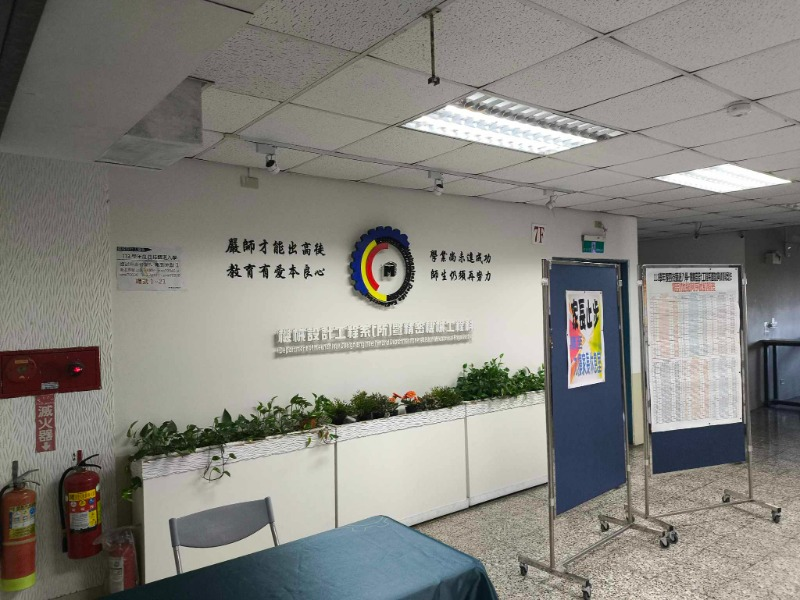

項目三 <<
Previous Next >> Replit
期末統整
期末影片連結:https://drive.google.com/file/d/16hrksYA4pVwrHnRmnBciBzn_A_IMreLu/view?usp=sharing
期末簡報連結:https://drive.google.com/file/d/13nV8kEuBdhfNT7A8-ZacbO89MrGrKA6V/view?usp=sharing
期末心得:
協同產品設計實習是一門充滿程式、繪圖、模擬、分工合作、網際網路、維護網站的課。過程中雖然艱辛，要學的也很多，但是我學習到了很多與同學合作的機會。且利用定期的更新推送新事物去個人網站、網誌，能督促自身學習之外，還能將學習的過程記錄在網誌、網站上，既能紀錄也能和各同學分享。最後我雖然有許多東西並未做出，也有許多進度還未跟上，但是這門課我已盡我最大的努力。這門課雖然艱辛，但是我覺得十分有意義，過程中也學到了從未有的知識，說學很多那是不可能的，但是我確實感受到了這門課的精實，也期盼我的進步能帶給我未來有更好的前程，也期盼老師教導我們之際也能學習，找到更好的方法去培育我的學弟妹們。我覺得這門課就是我與老師的互相學習時間，因為協同真的是太複雜了，有太多無可預料的事情會發生，就要藉由師生共同努力去一點一滴的破解，讓協同更順暢，我想這是這門課的最終意義。

原本應該更早就會把期末統整簡報、影片給完成而傳上來。但是遇到星期五晚上搬宿舍、星期六去幫忙系上的甄試，因而有去延遲到，最終我在星期日與星期一的交界處完成最終的統整。然而上圖是我當天去甄試幫忙所拍的，這四句話就寫在我們系上7樓的大牆上，十分顯眼。我覺得十分的有道理。
項目三 <<
Previous Next >> Replit